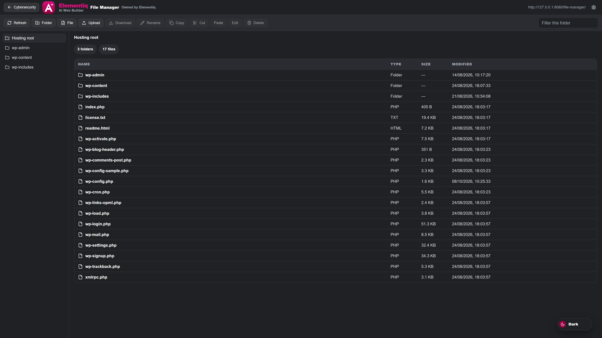

Hosting files
Open File Manager from Elementiq → Cybersecurity when you need to browse, upload, or preview files on the WordPress install. It is part of the plugin, not a separate file manager you have to install.

Browse files on the WordPress install from Elementiq.
List folders, open files, and preview when the type is supported. Use it for hosting tasks next to building pages.
Create folders, rename, copy, move, upload, and download. Protected files such as wp-config.php cannot be deleted from here.
Admins can also open File Manager from a private URL. Change that path in the File Manager settings if you need to.